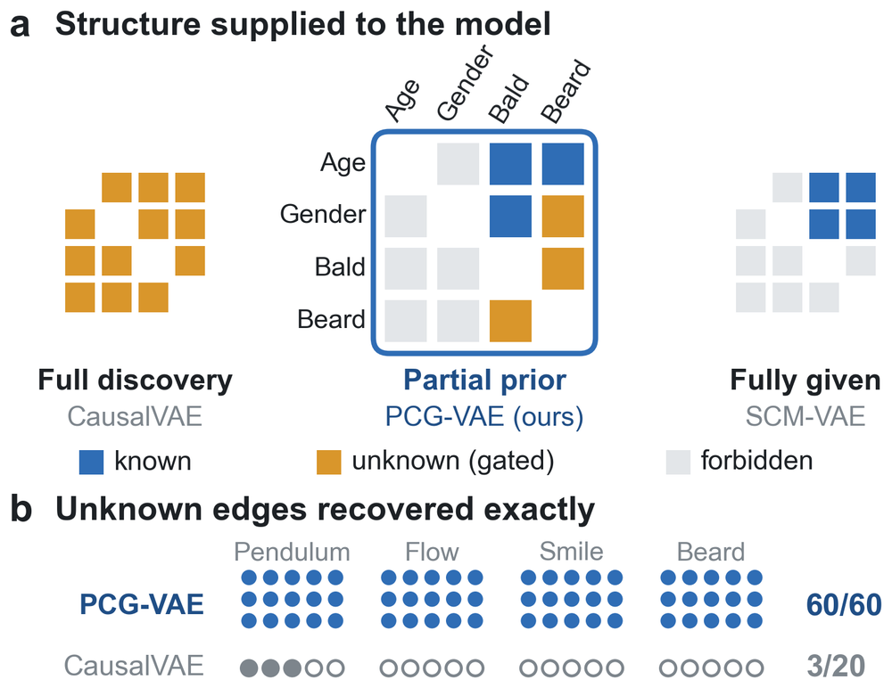
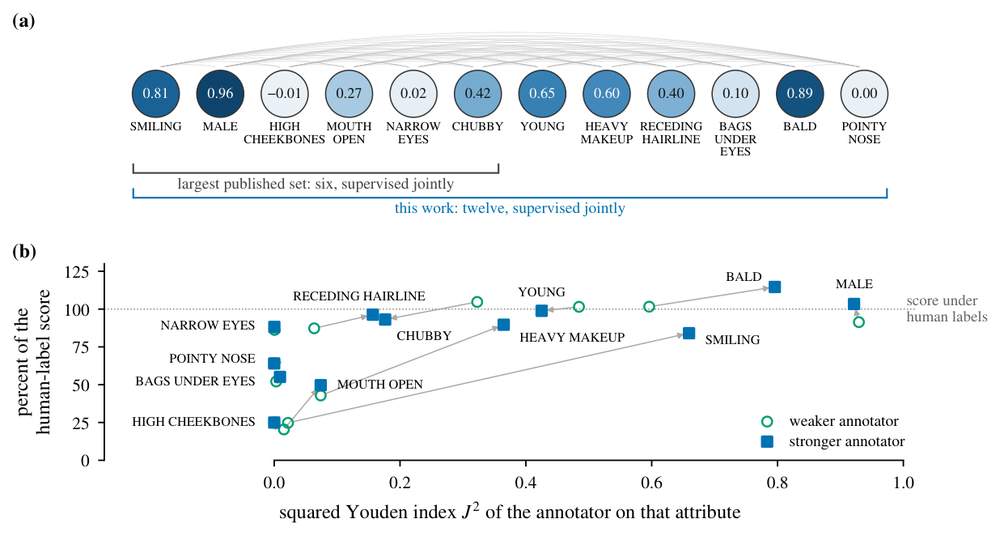
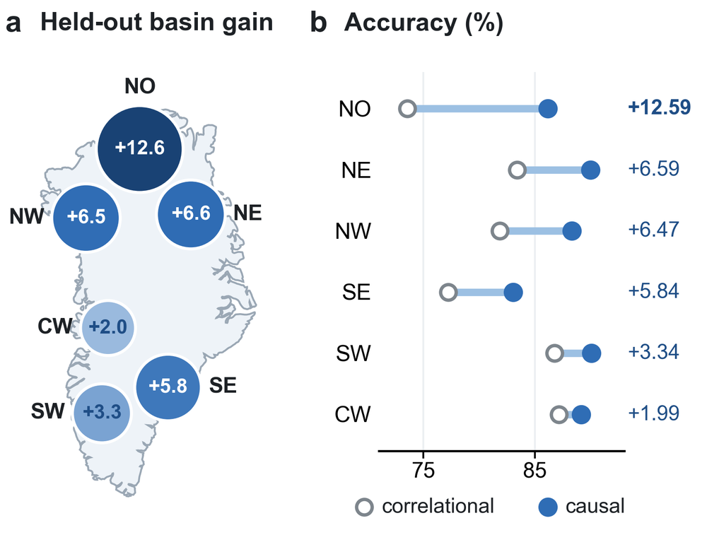
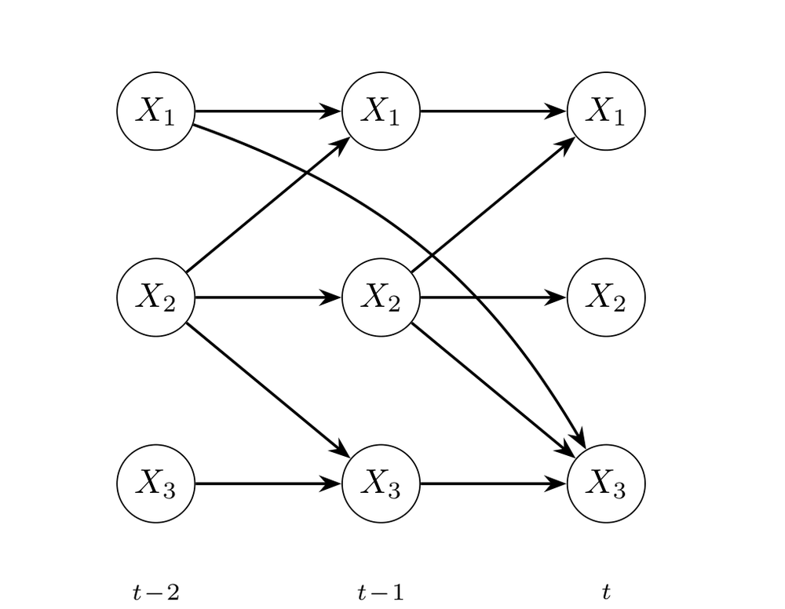
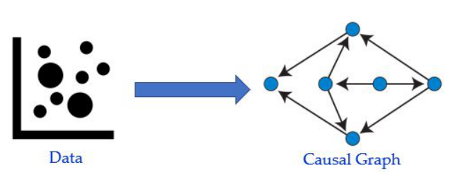
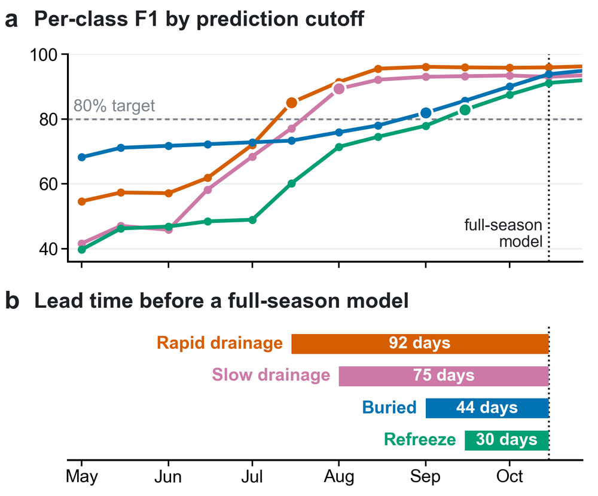

Publications
Publications
Selected papers with a short summary, the full list by year, and talks. For citation counts, see Google Scholar.

PCG-VAE: Learning Causal Representations under Partial Structural Knowledge
Under review, CVPR 2027
Experts mark each causal link as known, forbidden, or unknown, and the model learns only the unknown ones. It recovers the hidden structure exactly in all 60 runs, compared with 3 of 20 for full discovery.

VLM-Gauge: Pricing Vision-Language Supervision for Causal Representation Learning
Under review, ICLR 2027
Uses a vision-language model as the annotator and prices its labels before training: a label of quality J is worth about J² human labels. Labels on 17,000 images beat human labels on 4,000, and twelve attributes are supervised jointly.

Causal Time Series Modeling of Supraglacial Lake Evolution in Greenland under Distribution Shift
IEEE ICMLA 2025
Lag-aware causal graphs choose the predictors. Causal models beat correlation-based baselines in all six leave-one-basin-out tests, with accuracy gains of up to 12.59%.

TimeGraph: Synthetic Benchmark Datasets for Robust Time-Series Causal Discovery
ACM SIGKDD 2025, Datasets and Benchmarks Track
Benchmarks with known causal graphs plus real-world trends, seasonality, missing data, and hidden confounders. Under nonlinear dynamics, standard methods often find none of the true links.

A Survey on Causal Discovery Methods for I.I.D. and Time Series Data
Transactions on Machine Learning Research, 2023 (Survey Certification)
Maps what each family of causal discovery methods assumes, so a practitioner can see which assumptions their data break.

Supraglacial Lake Fate Is Knowable Long Before the Season Ends
ACM SIGSPATIAL Workshop on Polar Data Science (PolDS) 2026
How early can we trust a prediction? Rapid lake drainage becomes predictable by 15 July, 92 days before a full-season model can be applied, and the ordering holds across learners and basins.
Under review and in preparation
- Evaluating a Benchmark Dataset for Supraglacial Lake Detection on the Greenland Ice Sheet
Bayu Adhi Tama, Michael MacFerrin, Josephine Namayanja, Sai Vikas Amaraneni, Emam Hossain, Maloy Kumar Devnath, Vandana Janeja, Aneesh Subramanian, Mohamed Mokbel. In preparation, Nature Scientific Data. - PCG-VAE: Learning Causal Representations under Partial Structural Knowledge
Emam Hossain, Md Osman Gani. Under review, IEEE/CVF Conference on Computer Vision and Pattern Recognition (CVPR) 2027. - VLM-Gauge: Pricing Vision-Language Supervision for Causal Representation Learning
Emam Hossain, Md Osman Gani. Under review, International Conference on Learning Representations (ICLR) 2027.
2026
- [18]Supraglacial Lake Fate Is Knowable Long Before the Season Ends
Emam Hossain, Md Osman Gani. ACM SIGSPATIAL International Workshop on Polar Data Science (PolDS). - [17]Evaluating Zone-Guided Front Extraction for Glacier Calving-Front Delineation in SAR Imagery
Chhaya Kulkarni, Emam Hossain. IEEE International Conference on Machine Learning and Applications (ICMLA). - [16]Why Convolution Still Matters: Evaluating Inductive Biases in Cryospheric Image Classification
Chhaya Kulkarni, Emam Hossain. IEEE International Geoscience and Remote Sensing Symposium (IGARSS).
2025
- [15]Causal Time Series Modeling of Supraglacial Lake Evolution in Greenland under Distribution Shift
Emam Hossain, Muhammad Hasan Ferdous, Devon Dunmire, Aneesh Subramanian, Md Osman Gani. IEEE International Conference on Machine Learning and Applications (ICMLA). - [14]TimeGraph: Synthetic Benchmark Datasets for Robust Time-Series Causal Discovery
Muhammad Hasan Ferdous, Emam Hossain, Md Osman Gani. ACM SIGKDD Conference on Knowledge Discovery and Data Mining (KDD), Datasets and Benchmarks Track. - [13]Learning What Matters: Causal Time Series Modeling for Arctic Sea Ice Prediction
Emam Hossain, Md Osman Gani. IJCAI Workshop on AI for Time Series (AI4TS). - [12]Correlation to Causation: A Causal Deep Learning Framework for Arctic Sea Ice Prediction
Emam Hossain, Muhammad Hasan Ferdous, Jianwu Wang, Aneesh Subramanian, Md Osman Gani. IEEE International Conference on Pervasive Computing and Communications Workshops (PerCom Workshops). - [11]Greenland Ice Sheet Wide Supraglacial Lake Evolution and Dynamics: Insights From the 2018 and 2019 Melt Seasons
Devon Dunmire, Aneesh Subramanian, Emam Hossain, Md Osman Gani, Alison Banwell, Hammad Younas, Brendan Myers. Earth and Space Science.
2024
- [10]Time Series Classification of Supraglacial Lakes Evolution over Greenland Ice Sheet
Emam Hossain, Md Osman Gani, Devon Dunmire, Aneesh Subramanian, Hammad Younas. IEEE International Conference on Machine Learning and Applications (ICMLA).
2023
- [9]A Survey on Causal Discovery Methods for I.I.D. and Time Series Data
Uzma Hasan, Emam Hossain, Md Osman Gani. Transactions on Machine Learning Research (TMLR).
2022
- [8]Machine Learning with Belief Rule-Based Expert Systems to Predict Stock Price Movements
Emam Hossain, Mohammad Shahadat Hossain, Pär-Ola Zander, Karl Andersson. Expert Systems with Applications.
2021
- [7]Foreign Exchange Currency Rate Prediction Using a GRU-LSTM Hybrid Network
Md Saiful Islam†, Emam Hossain. Soft Computing Letters. - [6]Comparative Analysis of Recurrent Neural Networks in Stock Price Prediction for Different Frequency Domains
Polash Dey†, Emam Hossain, Md Ishtiaque Hossain, Mohammed Armanuzzaman Chowdhury, Md Shariful Alam, Mohammad Shahadat Hossain, Karl Andersson. Algorithms. - [5]Glaucoma Detection Using Inception Convolutional Neural Network V3
Tasnim Afroze†, Shumia Akther, Mohammed Armanuzzaman Chowdhury, Emam Hossain, Mohammad Shahadat Hossain, Karl Andersson. International Conference on Applied Intelligence and Informatics (AII).
2020
- [4]A Novel Deep Learning Approach to Predict Air Quality Index
Emam Hossain, Mohd Arafath Uddin Shariff, Mohammad Shahadat Hossain, Karl Andersson. International Conference on Trends in Computational and Cognitive Engineering (TCCE). - [3]An Interactive Computer System with Gesture-Based Mouse and Keyboard
Dipankar Gupta†, Emam Hossain, Mohammed Sazzad Hossain, Mohammad Shahadat Hossain, Karl Andersson. International Conference on Intelligent Computing and Optimization (ICO). - [2]A Review on Recent Advancements in FOREX Currency Prediction
Md Saiful Islam†, Emam Hossain, Abdur Rahman, Mohammad Shahadat Hossain, Karl Andersson. Algorithms.
2019
- [1]A Digital Personal Assistant Using Bangla Voice Command Recognition and Face Detection
Dipankar Gupta†, Emam Hossain, Mohammad Shahadat Hossain, Karl Andersson, Sazzad Hossain. IEEE International Conference on Robotics, Automation, Artificial-intelligence and Internet‑of‑Things (RAAICON).
† Undergraduate student I advised. Numbers count peer-reviewed papers from the first, in 2019.
- Aug 2026Moving Beyond Correlation: Causal AI for Generalizable Climate Science
Position paper presentation, NSF HDR Ecosystem Conference, Chicago, IL
- Apr 2026Evaluating Reproducibility of Benchmark Algorithms for Supraglacial Lake Detection
Invited flash talk and poster, FARR Workshop, Washington, DC
- Dec 2025Causal Time Series Modeling of Supraglacial Lake Evolution in Greenland under Distribution Shift
Paper presentation, IEEE ICMLA 2025, Boca Raton, FL
- Nov 2025Causal Time-Series Modeling for Predicting Supraglacial Lake Evolution
Invited talk, iHARP All-Hands Meeting and ACM SIGSPATIAL PolDS 2025, Minneapolis, MN
- Mar 2025Correlation to Causation: A Causal Deep Learning Framework for Arctic Sea Ice Prediction
Paper presentation, IEEE PerCom Workshops 2025, Washington, DC
- Dec 2024Time Series Classification of Supraglacial Lakes Evolution over Greenland Ice Sheet
Paper presentation, IEEE ICMLA 2024, Miami, FL
- Jun 2024Time Series Classification of Supraglacial Lakes Evolution
Invited talk, iHARP All-Hands Meeting, Fairbanks, AK
- Jan 2024Incorporating Causality with Deep Learning in Predicting Short-Term and Seasonal Sea Ice
Poster, 104th AMS Annual Meeting, Baltimore, MD
- Dec 2020A Novel Deep Learning Approach to Predict Air Quality Index
Paper presentation, TCCE 2020, Dhaka, Bangladesh
- Nov 2019A Digital Personal Assistant Using Bangla Voice Command Recognition and Face Detection
Paper presentation, IEEE RAAICON 2019, Dhaka, Bangladesh